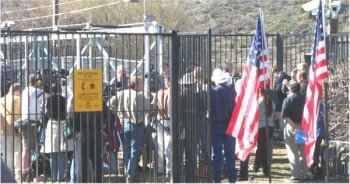
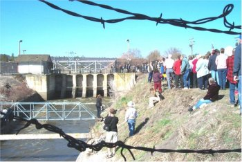

The Stand at Klamath Falls
Report Number Fifteen - Secretaries of Interior and Agriculture Open Headgates
By: Jeff Head, April 2, 2002
[With Elko Daily Free Press and the Associated Press]
After the January 28th Bureau of Reclamation preliminaty water management strategy and the finding of the National Acadamy of Sciences released on February 3rd, it sppeared that the Federal Government was in a complete reversal of its activities of last year regarding the cut off of irrigation water to the farmers of t6he Klamath Basin. That appearance turned into reality when, on March 29th, the Secretary of Interiror and the Secretary of Agriculture flew to Oregon and personally opened the headgates and turned the water back on for the Spring.

The Secretary of Interior and Secretary of Agriculture Speak at the headgates in Klamath

The Headgates are Open, Once again they "Let the Water Flow".
This was much anticipated and much prayed for, worked for and great risk taken over. Although I am personally happy and thankful for this occurance, let there be no mistake. The water being turned on was not a result of the good nature or good heart of these officials. It was a result of the commitment, valor, courage and faith of a group of all-American farmers who risked everything to protest a frivolous and tyranical action by their own government. The many reports on this site attest to that.
When the heat was raised, when it was clear that confrontation and ultimate conflict was what waited on a continued denial of water rights, the government turned around. I thank those men and women whom I came to know so well in the Klamath Basin for it, I thank all of those who pitched in to help them all over the nation and all over the west in particular, I thank the talk show hosts and folks at Sierra Times, FreeRepublic and the Foundation of Freedom ... most of all I thank God for hearing and answering our prayers and allowing us to avoid open conflict. The best I can say for this administration is this ... they didn't push it to open conflict and they didn;t initiate it. the prior adminstration probably would have.
A news report from the Elko Daily Free press, assisted by the Associated Press follows that details the events of that day, March 29, 2002 ... the day the water flowed once again.
FARMERS GET THEIR WATER
Tide turns in Basin water fight (Klamath)
03/29/02 | By JUSTIN POST, Staff Writer
KLAMATH FALLS, Ore. -- Marni Morrow says she barely managed to survive last year after the federal government cut off irrigation water to her family's Klamath Basin potato farm.
A year without water, court fights with the government and environmentalists, and the fear of losing their livelihood caused stress that claimed the lives of several close friends, she says.
Morrow was unable to hold back tears this morning as two Cabinet secretaries opened the main water diversion canal in the Klamath Basin in a show of Bush administration support for farmers who lost crops during last year's drought.
"This lake is the heart of this community and when they closed this headgate down they cut off the flow to this community's main artery," an overjoyed Morrow said, clutching her young daughter.
Water began to gush through the headgates and toward farmers' fields today for the first time since last summer, when federal biologists said continued water draw-down in a time of drought would harm endangered sucker fish in Upper Klamath Lake and threatened coho salmon in the Klamath River. Environmentalists cheered last year's decision, while many farms along the Oregon-California border were pushed to the brink of bankruptcy. Today's beginning of a new irrigation season brought new hope to the struggling farmers.
Standing beside environmentalists who held a sign reading "Potatoes aren't everything," Morrow questioned how the green activists would feed themselves without the nation's family farms.
"We farmers aren't millionaires but we are feeding this country," Morrow said. "Do they really think there is another nation that is going to feed us? They better take a look at the Twin Towers if they think there is. What they did here last year, closing these gates, was an act of terrorism."
She calls the opening of the headgates the beginning of victory for farmers and others who question the Endangered Species Act and its impact on people in the West.
"We've come to understand and know the needs of agriculture in this valley," said Interior Secretary Gale Norton. "We have to find ways to balance the needs of the ecosystem and of people."
As farmers cheered "let the water flow, let the water flow," Norton and Agriculture Secretary Ann Veneman cranked open the irrigation headgates.
During an earlier meeting with 32 farmers, ranchers and politicians from Klamath Falls, as well as Assemblyman John Carpenter, R-Elko, and Elko attorney Grant Gerber, Veneman ensured sound science would be used before more species are given protection through the Endangered Species Act. The Bush administration also pledged support for a bill introduced by Western lawmakers that would amend the species act.
"I think it's great," Carpenter said, standing beside the irrigation canal. "That's just what we want. For top politicians to support the amendment that makes the Endangered Species Act more people friendly."
Gerber offered similar thoughts.
"It's an absolute victory," Gerber said. "The water is flowing. There is 8 to 10 feet of water in the A Canal flowing to the farmers. Last year at this time the farmers had no water."
Farmers and their supporters also prepared to make sure the water keeps flowing.
"We understand the radical environmentalist bureaucrats will try to stop it, but Bush is in support of the farmers," Gerber said.
Supporters of the Klamath farmers were critical of Nevada Sen. Harry Reid.
"The farmers would have had water last year if the Senate Democrats wouldn't have voted against them," Gerber said. "Harry Reid dried up the farmers in the Klamath Basin. He was Senate majority whip and he held all of the Democratic senators in line and voted against the farmers."
Gerber and Carpenter said today's water release was also important for people in northeastern Nevada.
"Whenever people in rural areas of the nation win a fight, it's helping the people of Elko County because the people in Elko County are in these battles," Gerber said. "We've lost thousands of cattle to environmental regulations.
"This is a victory here in Klamath. Bush is recognizing these are the people who voted for him."
President Bush has formed a federal task force to come up with short- and long-term solutions. Work is also under way to develop a 10-year management plan for the basin.
Again, let there be no mistake. The prior administration would probably not have responded in this way, even in an overdue fashion. It would probably have led to worsening conditions and ultimate physical and potentially violent confrontation.
This administration has responded, thank God, albeit in a very delinquent fashion and based on political motivations in my opinion, rather than simply for the reason that they will do what is right to protect the God-given rights of their citizens. A constitutional crisis pitting the executive branch against the judicial branch and possibly involving the legislative branch should have been forced last year to resolve this isuue.
That it wasn't just means that the ultimate resolution, the ending of the Endangered Species Act and the restoration of the rights of these farmers to their water by ceding ownership of the irrigation project to them as called for in the original reclamation act, has just been put off. But this is the resolution needed in Klamath, and all over the west.
Also, make no mistake, without the couragous actions of a those fine, God-fearing and patrioticv farmers last summer, the current actions returning things to a status qou, would not be occuring.